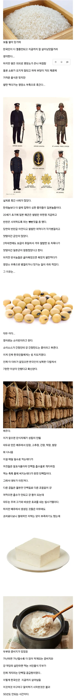

한국인들의 단백질 섭취를 책임진 식량
댓글
콩밥 가져오면 뒤진다
두부....그렇게 좋은거였어?!
우리 집 두부 좋아해서 소고기 먹을 때도 두부 반찬은 항상 있는데ㅋㅋㅋㅋㅋ
일본은 콩없냐 미소에 낫토에.. 이런 국뽕슬롭은 퍼오지마라
우리나리는 마늘과쑥과콩이 메인이고 밥은 곁들여먹는것임
운동할때 두부 많이 챙기묵엇다
두부 사랑해
일본에 각기병이 있긴했는데
쌀을 최고의 식량으로 여겼는데
식민지 수탈로 쌀은 존나 넘치게 많고
쌀을 마음껏 먹을수 있는 세상이라고 존나 쳐먹는다란
기괴한 정서로 나온 병이지 발효콩이 없어서란 말은 좀 너무 헛다리 짚는 소리같음
일본 애들이 쌀에 집착하게 된건
또 찾아 올라가다보면 흥미로움
기회되면 읽어들 봐용
뭐라고 검색해야 하나용
검색창에 5공5민 검색ㄱㄱ
도쿠가와 이에야스가 존경받는 이유부터 알아가면 재밌을듯
근데 원래 두부 겁나 고급 음식이라매? 근대들어서는 서민음식이 됐나?
근데 한국인의 체형이 과거에도 동아시아 다른 국가들에 비해 머리 하나 정도 더 컸다는 기록은 있긴 하지만, 본격적으로 체형이 변하기 시작한건 1970년대 우유급식 및 식생활이 서구식으로 바뀔때부터 라고 하는데, 만일 두부나 두부비지 등의 단백질 섭취 효율이 매우 좋아서 고기수준이다 라고 할 수 있을까 싶음
애초에 두부를 자주 먹지도 않았지
손 많이가는 음식이라 양반들도 별미로나 먹음
+ 콩나물이 완성임
그래서 내가 대두구나
일본은 콩반찬 없냐? 밥을 먹기위해 반찬을 먹는 애들이긴한데
얘는 한동안 조용하더니 또 지랄이네